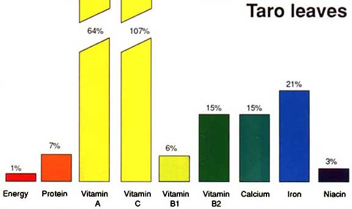
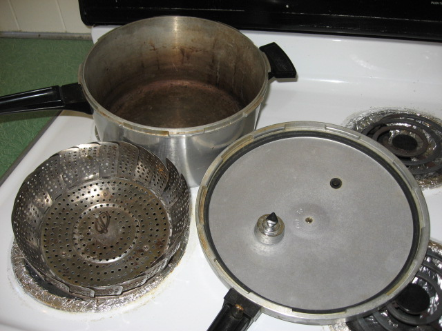

I maika‘i ke kalo i ka ‘ohā. ‘Ōlelo No‘eau, No. 1232
The goodness of the taro is judged by the young plant it produces. Or, parents are often judged by the behavior of their children.
Taro Leaves and Stems
Taro leaves and stems contain a large amount of Vitamin A, which is needed for proper growth, healthy eyes and protection from disease. They are a good source of Vitamin C and Vitamin B2 (riboflavin).
Vitamin C keeps the body tissues strong, helps the body use iron and helps chemical actions in the body, and-riboflavin is needed for normal growth and healthy eyes.
Taro leaves contain Vitamin B1 (thiamin), which helps the body use energy foods. Taro leaves also contain useful amounts of calcium and iron.
Everyone should eat some green leafy vegetables every day; taro leaves and stems are one good choice.
Cooking kalo is a slow food. Strip the thin skin off the stem before cooking. Your goal is to break down the calcium oxalate crystals but save the nutrients.
Boiling is not a favorite cooking style because the water vampires away the nutrients.
For lau or lū‘au (leaves) and hā (stem): The pressure cooker is an efficient machine. When the steam flows, cook big lū‘au for an 1 hour 15 min.
Cook new, more tender lū‘au (leaves) for 50 min.
For steam cooking, when the steam starts to flow cook all-sizes of lū‘au or stem for 3 hours.
A Crockpot makes cooking lau easy. Throw the lau in and run the heat overnight.
Percentage of daily needs of a child (1 - 10 yrs) filled by one serving (about 1/2 cup after cooking) of taro leaves
See this PDF Taro, Pacific Food Leaflet No. 5. Click the words to the left and the leaflet will download. Size 2.3 MB. Published by the Secretariat of the Pacific Community.
Cooked Lu‘au (Taro Leaves) in Water
Serving 16 ounces (oz.) bag of lu‘au leaves (like you buy at the supermarket), 454 grams, breaks down to about 4 servings, or 4 oz.
Amount Per Serving
- Calories 20 Calories from Fat 5
- Total Fat 0.5 grams (g)
- Saturated Fat 0 g
- Cholesterol 0 mg
- Sodium 10 mg
- Total Carbohydrate 5 g
- Sugars 1 g
- Dietary Fiber 4 g (16% of Daily Value)
- Protein 3 g
- Vitamin A 10%, Vitamin C 30%, Calcium 6%, Iron 2%
Detailed Nutrient information also found at this Nutrition Data website
and this foods website
(Reprinted from the Food and Agriculture Organization of the United Nations website)

Pressure cooker and folding steamer basket